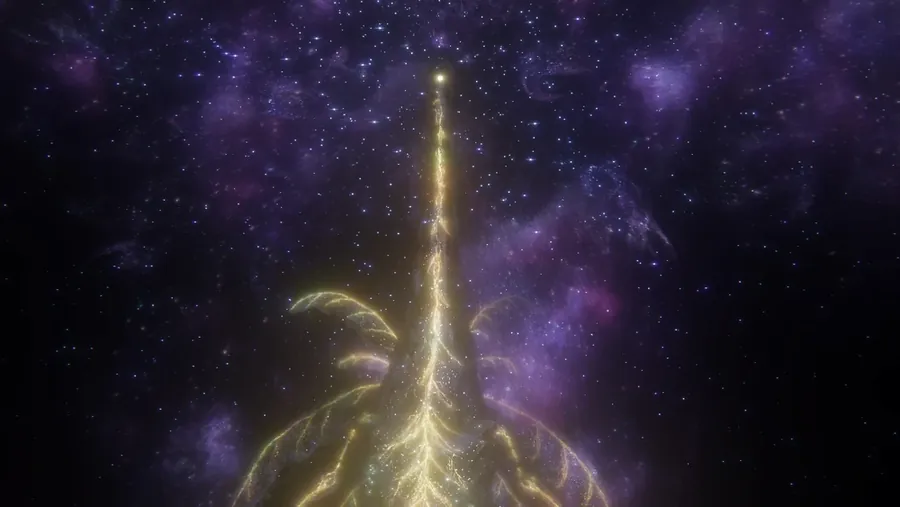
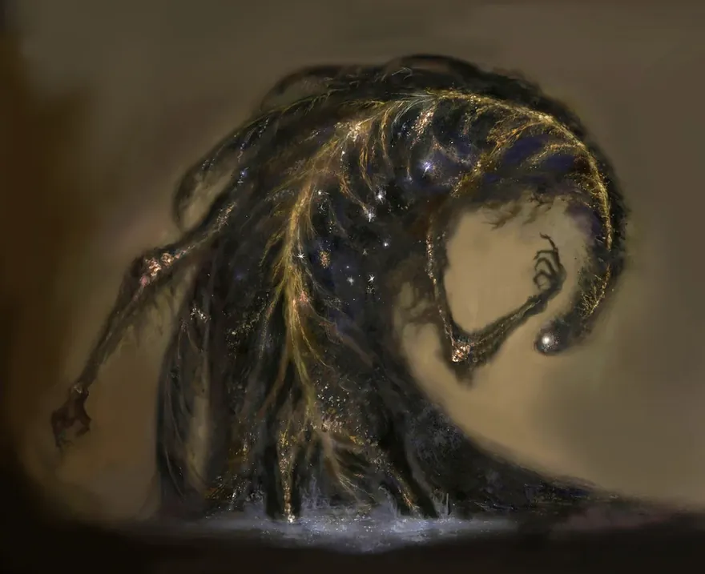

The Story of the Elden Beast
To understand the Elden Beast, you have to understand the order it was sent to protect. Its story is the story of the Elden Ring itself.
The Greater Will and the Golden Order
Long before the events of the game, an outer god known as the Greater Will sent a golden star down to the Lands Between. That star carried the Elden Ring: a set of divine rules that shaped reality — life, death, growth, and order. From it grew the Erdtree, the towering golden tree that dominates the world and binds the souls of the dead.
Around the Elden Ring, Queen Marika built the Golden Order, a religion and a system of law with herself as its god-vessel. For an age, the Lands Between flourished beneath the Erdtree's light.

A vessel for the Elden Ring
The Elden Beast is not Marika, and it is not a demigod. It is the divine vessel of the Elden Ring — the Ring made flesh. It exists to keep the Order intact and to answer to the Greater Will. When you finally reach the foot of the Erdtree, you are not just fighting a monster; you are fighting the embodiment of the world's rules.
The Shattering and the Erdtree
Everything broke when Marika shattered the Elden Ring. Her demigod children each seized a shard — a Great Rune — and went to war in the conflict known as the Shattering. The Greater Will turned away, the Erdtree sealed itself, and the Tarnished were called back to the Lands Between to mend what was broken and become Elden Lord.

The final guardian of the Order
At the very end of the journey, you defeat Radagon of the Golden Order — Marika's other half — inside the Erdtree. But the Order does not surrender. Radagon's body is lifted into the sky and absorbed by the Elden Beast, which descends to make its last stand. To claim the throne, you must strike down the embodiment of the Elden Ring itself.
To wound the Elden Beast is to wound the Order itself — and the Order does not die quietly.
Win, and the choice of how to remake the world is finally yours. Ready for the fight? Head to the kill guide for a phase-by-phase breakdown and the weapons that melt the Beast.